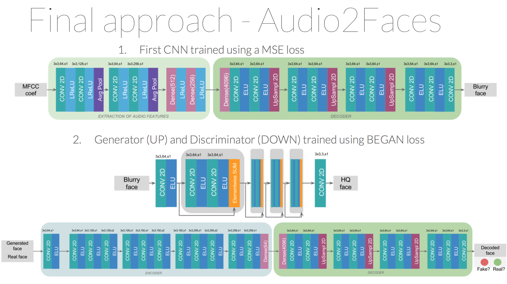

Our idea is to generate a talking face from an audio segment by using Generative Adversarial Networks (GANs). The architecture used is the proposed by David Berthelot, Thomas Schumm and Luke Metz in their work [Boundary Equilibrium Generative Adversarial Network (BEGAN)](https://arxiv.org/pdf/1703.10717.pdf). In our case, the input to the Generator network will be the audio features of an audio segment. Those features are obtained by passing the MFCC coefficients of the audio segment through a shallow CNN architecture. By doing that, we provide information to the generator network to be able to generate a face according to the provided audio segment.

In order to train our network, we have also created our own dataset as we did not found any suitable one for our task. The goal was to generate a colection of Donal Trump face images with its asociated audio. To do so, first we extracted videos from the youtube platform. Then, we cropped them on the parts where Trump was speaking and we extracted the images and audio using a python script that we developed for such task. We wanted to have well centered faces and with the cleanest audio possible, for that reason we chosed to download videos from Donald Trump public speeches. Once the videos were selected, we had to process them to obtain both the face and the audio corresponding to the face.

Raw audio data is usually not useful for classification tasks as audio frames have very high dimensionality and the samples are very correlated. So for each frame we need to extract the most important features. A good way to do so is to compute the Mel-frequency cepstral coefficients for each audio frame. MFCC are easy to compute, widely used in stat of the art applications and with a very good performance. The MFCC values are made up of individual coefficient each representing a specific frequency band of the audio short-term power on a non-linear Mel scale of frequency. As the input videos provides us with a 30 faces per second, we decided to get 35ms audio frames to avoid overlapping and 60ms frames to get 50% overlapping. For each audio frame we compute the MFCC coefficients on a sliding window with 50% overlap so we obtain a 2D heat map for every audio frame that shows the evolution of the MFCC.
In order to extract the face we resorted to the well known library for computer vision [OpenCV](https://opencv.org/).
Using this library we extracted each frame of the video, then we processed each frame independently to extract the face.
On the first iteration of our project we used the Viola Jones face detector. It worked pretty well but had some problems
such as a high false positive rate and the fact that the faces where not centered inside the bounding box.
To overcome this drawbacks and obtain a better dataset with less variance we changed the face detection algorithm.
In this case, we used the algorithm proposed by Kaipeng Zhang et al. in [Joint Face Detection and Alignment using Multi-Task Cascaded Convolutional Networks].
This algorithm not only detects faces but also aligns them, providing then a more homogeneous dataset which will make our final task easier.
In a nutshell, the method proposed consists of 3 stages. In the first stage, it produces candidate windows quickly through a shallow CNN.
Then, it refines the windows to reject a large number of non-faces. Finally, it uses a more powerful CNN to refine the result and ouput facial landmarks that will be used to align the face. All these 3 process are done at different scale levels.
A tensorflow implementation of this algorithm can be found here: https://github.com/kpzhang93/MTCNN_face_detection_alignment/
The architecture proposed in the [Boundary Equilibrium Generative Adversarial Network (BEGAN)](https://arxiv.org/pdf/1703.10717.pdf) is quite different to the general way of building GANs. In this case, we have that the architecture used for the Discriminator network is an autoencoder, while the Generator has only the decoder part. In order to conditioned the Generator network to generate talking faces according to an audio segment, our first approach to solve the problem was to input to the generator audio features instead of a random noise. Those features have been extracted from a CNN which had as an input the audio segment. This CNN is composed by: Conv (3x3,64) + Conv (3x3,128) + Pool(2) + Conv (3x3,256) + Conv (3x3,512) + Dense(512) + Dense (256).

The aim of an autoencoder is to learn a representation (encoding) for a set of data, typically for the purpose of dimensionality reduction. We use this to extract features from the MFCC coeficients in order to ease the task for the main network. If the feature extractor weights are learned at the same time that the generator is trained, the discriminator will have even more advantage.
The training of the system was not as straightforward as we thought. We had to face some problems during the training phase and the generation of the dataset. During training, the Generator's output was always the same in a batch, so we had a mode collapse problem.
In this image we can see at the left, the faces generated by the Generator network. Each one of the rows correspond to a batch, so we are showing two samples for each batch. As can be seen, the faces generated in each of the batches are the same within the batch. To the right, we have at the top the input image and below the images generated by the Discriminator network (Remember that the Discriminator in the BEGAN architecture is an autoencoder, so it also generates images).
In order to overcome the situation, we concatenate to the input audio features a random noise. The reason is that audio features were very similar between each other, so maybe the network was not able to obtain enough information and so it fails in generating different images. The introduction of a random sequence to the input, was thought to provide this variability and so improve the results. But... it also failed.
Here we can see that we still generate the same samples within the batch, and what is more, the Generator network at some point fails completely, and it is not able to ouput faces anymore. We decided to finally simplify the network, and input only noise to the generator network. That would be, generate different Trump faces without any audio condition. We can see here the evolution of the variable Kt and MGlobal. As can be seen MGlobal decreases, so the generator is able to generate more realistic faces, but, we still generate the same face...
The last trick we tried to overcome the situation, was to reduce even more the learning rate and also reduce the batch size to just one image. In that case we were able in training time to generate faces from both of the videos used for training (previously the network was only generating a face corresponding to one of the videos). But finally, when testing we were again generating the same face.
We tried to reduce even more the learning rate and we applied a batch size of just one image. During training we were able to observe images from both videos used in the dataset. In previous trainings we were able to generate an image that looked like just one of the videos. But, finally, at test time we could just generate the same image.
As any of the solutions that we have been trying were able to overcome the Mode Collapase situation, we had to rethink the idea. For that reason, our final solution was a totally different approach from our initial one.
The Audio2Faces method consists on training two different networks:
The first network is a Convolutional Neural Network trained using a MSE loss. Using a MSE loss produces blurry images, because the output provided is the mean of all the different possibilities of a position of a face. Due to that, if we train the network with a dataset with faces looking to the right and to the left, the output provided looks like a mix of two faces, each one looking to a different direction. So our first task was to process the dataset to flip all faces looking to the right. For doing that, we compare the histogram of the left part of the image with a mean of histograms, in the same position, of faces correctly positioned. We set a threshold of similarity, and when the distance between histograms was higher than the threshold, the images were flipped.
In order to sharpened the images and made them more realistic, as second network we introduced a modification of the BEGAN architecture. Taking advantage of the realism and high quality faces provided by this network, we modified the architecture of the generator to be able to have as an input the blurry face predicted by the first CNN. By using skip connections that helps data flow and preserves information of previous layers, we output a better representation (in terms of realism of images) of the input image.
[1] David Berthelot, Thomas Schumm, Luke Metz [Boundary Equilibrium Generative Adversarial Network (BEGAN)](https://arxiv.org/pdf/1703.10717.pdf)
[2] Kaipeng Zhang et al. “Joint Face Detection and Alignment using Multi-task Cascaded Convolutional Networks” (2016) https://arxiv.org/ftp/arxiv/papers/1604/1604.02878.pdf